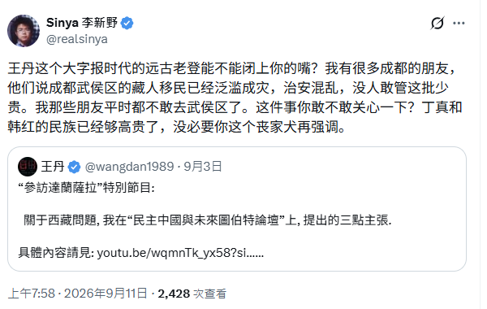

小餅思定
@tatibana_sada
奥弗顿窗正在打开。
我记得应该2021的时候，知乎的正道体面温和保开始转入泛男拳（反利女+排女）阵营，到2024的时候我认识的一个安b，几年前还会认真的读波伏娃做读书笔记，就已经开始说女拳必须停止要保卫男性文娱了。
皇汉正在进入同样的轨道，今天会被认为大逆不道的言论，几年后就会变成时尚单品。

Baoju.SEO
@bjahu2000
李新野这种开始亲近汉本位现象。
不一定是他被这几年兴起的汉本位思潮影响，变成了汉民族主义者。更可能是整个社会的话语边界在变。
以前很多话，基本只有皇汉敢说。现在越来越多普通人、自由派，甚至过去比较排斥民族主义的人，也开始觉得这些问题可以谈，而且没那么反感汉本位这个视角了。 https://t.co/unyX8y2mPd